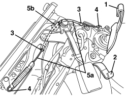

7045A64 FRONT SLIDING SEAT POSITION MECHANICAL MEMORY CONTROL CABLE . (ONE), LEFT OR RIGHT - R.R.
- Path
- Procedures > 70 FITTINGS > 7045 FRONT SEATS > 7045A FRONT SEAT ASSEMBLY > 7045A64 FRONT SLIDING SEAT POSITION MECHANICAL MEMORY CONTROL CABLE . (ONE), LEFT OR RIGHT - R.R.
- Kind
- repair procedure (removal / refitting; the operation number is the code)
- Applies to
- all engines; all production periods
- Interactive page
- https://sloeber94.github.io/elrnDB-aBrrSpdr/en/#/946004144
Applies to: all engines; all production periods
 Removing
Removing
 Refitting
RefittingOp. 7045A10 FRONT SEAT (ONE), LEFT OR RIGHT - R.R.
1. Disconnect the backrest cover retainer.
2. Disconnect the cushion cover retainer.
3. Disconnect the retainers for the control cable outer casing.
4. Disconnect the retainers for the control cable terminals.
5. Remove the control cable (5a) by releasing it from the retainer (5b).

Applies to: all engines; all production periods
Refitting
Removing- Check that the control cable is not damaged.
- Position the control cable and attach to the retainer.
- Connect the retainers for the control cable terminals.
- Connect the retainers for the control cable outer casing.
- Connect the cushion cover retainer.
- Connect the backrest cover retainer.